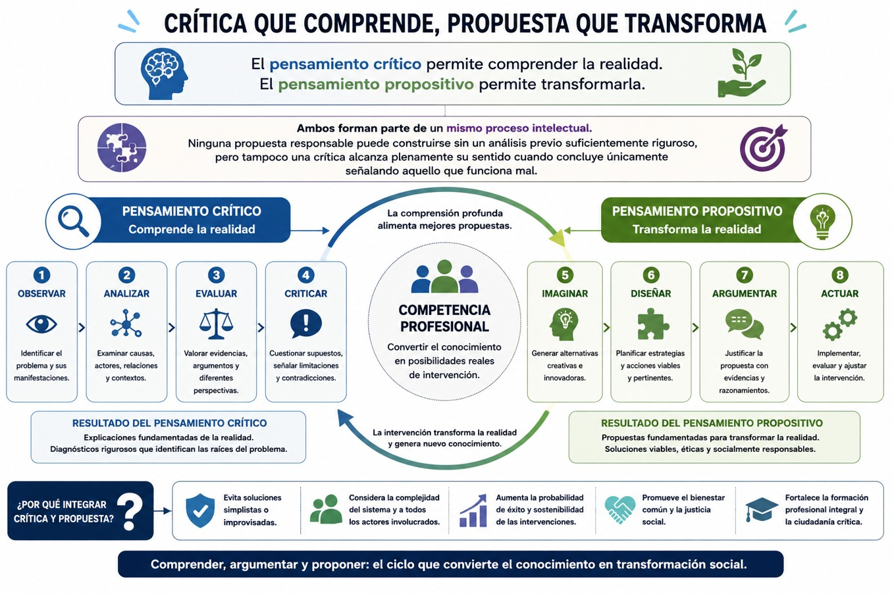
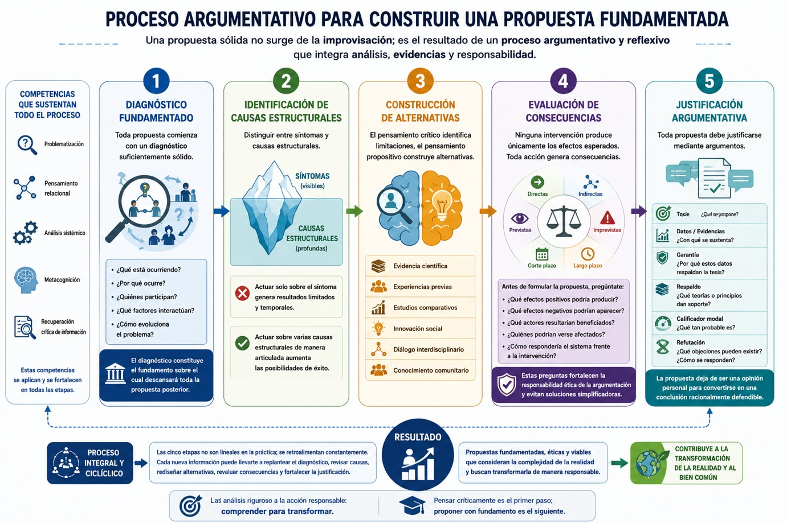
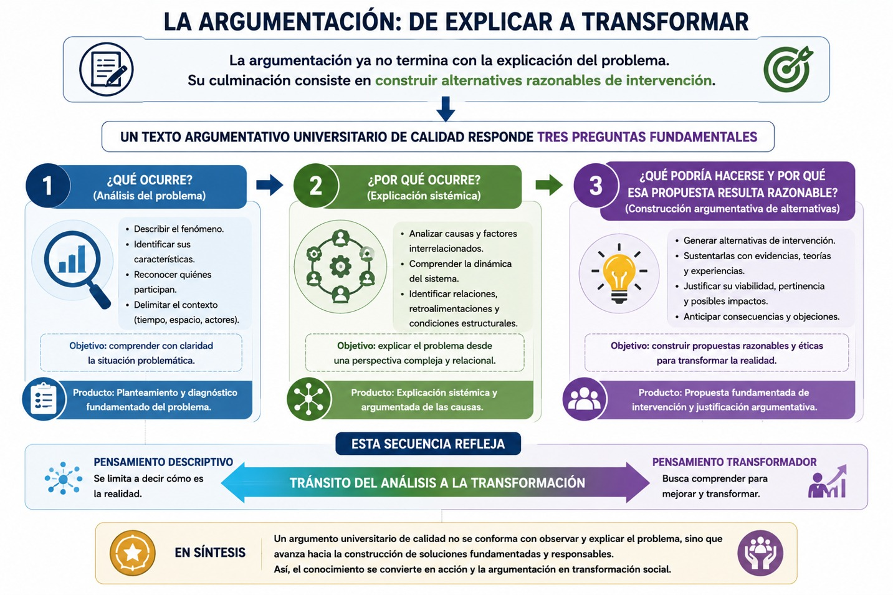
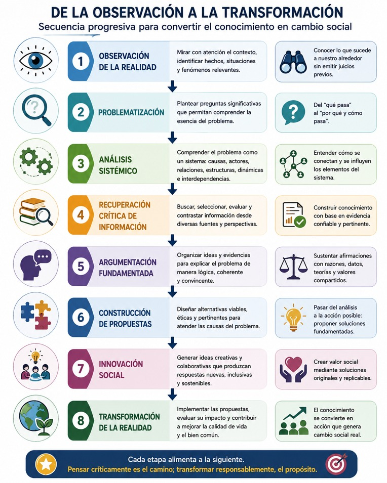

Hasta este momento de la Unidad Curricular de Aprendizaje has recorrido un proceso intelectual que ha transformado gradualmente tu manera de comprender la realidad. En el primer bloque aprendiste que los fenómenos sociales constituyen sistemas complejos caracterizados por la interdependencia, la incertidumbre, la emergencia y la retroalimentación. Posteriormente comprendiste que investigar implica construir problemáticas y no únicamente describir problemas aislados. Más adelante desarrollaste competencias metacognitivas que te permiten autorregular tu propio proceso de aprendizaje, identificar los límites de tus explicaciones y reorganizar continuamente tus interpretaciones. Finalmente, estudiaste los modelos argumentativos de Stephen Toulmin y Chaim Perelman, los cuales proporcionan herramientas para construir argumentos rigurosos, fundamentados y orientados hacia un auditorio específico.
Todo este recorrido conduce naturalmente a una pregunta fundamental: ¿para qué argumentamos?
La respuesta trasciende el ámbito estrictamente académico. Argumentar no constituye un ejercicio destinado únicamente a aprobar una asignatura o redactar un ensayo académico. Desde la perspectiva del pensamiento complejo, argumentar significa desarrollar la capacidad de comprender críticamente la realidad para intervenir responsablemente en ella. En otras palabras, el conocimiento adquiere sentido cuando permite explicar problemas complejos, dialogar con distintas perspectivas y proponer alternativas de transformación para el diseño social.
Con frecuencia se piensa que el pensamiento crítico consiste únicamente en identificar errores, señalar deficiencias o cuestionar las acciones de otras personas e instituciones. Sin embargo, esta interpretación resulta incompleta. La crítica constituye solamente una primera etapa del razonamiento. Una formación universitaria orientada por la responsabilidad social exige avanzar hacia un pensamiento capaz de construir soluciones fundamentadas, evaluar sus posibles consecuencias y proponer estrategias viables de intervención. En este sentido, la argumentación deja de ser una actividad exclusivamente analítica para convertirse también en un proceso creativo y propositivo.
Esta transición resulta especialmente importante en el contexto contemporáneo puesto que las sociedades actuales enfrentan desafíos de enorme complejidad y ninguno de estos problemas puede resolverse mediante explicaciones simplificadoras ni mediante respuestas improvisadas. Esta realidad social requiere ciudadanos socialmente comprometidos y profesionistas capaces de analizar información desde múltiples perspectivas, deliberar con fundamento científico y construir propuestas éticamente responsables.
Los modelos argumentativos revisados en este bloque fortalecen precisamente esta competencia, Stephen Toulmin proporciona una estructura para justificar racionalmente las propuestas mediante evidencias, garantías y respaldos teóricos y Chaim Perelman recuerda que toda propuesta debe construirse considerando las características del auditorio y las condiciones concretas del contexto donde pretende implementarse. El pensamiento complejo aporta, además, la comprensión sistémica necesaria para reconocer que toda intervención genera efectos sobre otros componentes del sistema y que las soluciones deben valorar siempre sus posibles consecuencias.
Diferencia entre criticar y argumentar críticamente
En el lenguaje cotidiano es frecuente utilizar la palabra crítica para referirse a cualquier comentario negativo acerca de una persona, una institución o una situación determinada. Expresiones como "solo sabe criticar" o "es muy crítica o crítico" suelen asociarse con actitudes de desaprobación permanente. Sin embargo, como hemos visto desde la filosofía, las ciencias sociales y la argumentación académica, el pensamiento crítico posee un significado completamente distinto. Como hemos visto, en la tradición filosófica moderna se entendía la crítica como un examen de las condiciones que hacen posible el conocimiento, mientras que la Escuela de Frankfurt, representada por autores como Max Horkheimer, Theodor Adorno y posteriormente Jürgen Habermas, se amplió esta idea hacia el análisis de las estructuras sociales que reproducen relaciones de dominación. Para estos autores, el pensamiento crítico no consiste únicamente en interpretar la realidad, sino también en revelar las contradicciones presentes en las instituciones, las ideologías y las prácticas sociales con el propósito de favorecer procesos de emancipación.
Esta tradición dialoga estrechamente con el pensamiento complejo desarrollado por Edgar Morin. Ambos enfoques rechazan las explicaciones simplificadoras y proponen analizar los fenómenos considerando la interacción entre múltiples dimensiones. Criticar implica entonces identificar relaciones ocultas, reconocer la incertidumbre, cuestionar supuestos aparentemente evidentes y comprender que toda explicación constituye una interpretación susceptible de revisión. Sin embargo, la crítica por sí sola resulta insuficiente. Un análisis que únicamente señala problemas puede generar diagnósticos muy precisos sin ofrecer caminos para transformarlos. Aquí aparece la diferencia entre criticar y argumentar críticamente.
Argumentar críticamente significa utilizar la crítica como punto de partida para construir explicaciones fundamentadas y abrir posibilidades de solución. No basta con afirmar que existe corrupción, desigualdad o deterioro ambiental; es necesario explicar por qué ocurren estos fenómenos, qué factores interactúan para producirlos, cuáles son las evidencias disponibles, qué teorías ayudan a comprenderlos y qué alternativas podrían contribuir a modificarlos.
Pensamiento crítico y pensamiento propositivo
Uno de los retos de tu formación en esta casa de estudios es que, además de que seas capaz de identificar problemas seas también capaz de construir soluciones para ellos. El pensamiento crítico suele detenerse en el análisis de las deficiencias existentes sin avanzar hacia la elaboración de alternativas viables. No obstante, la formación universitaria orientada por el pensamiento complejo exige integrar dos capacidades inseparables: la crítica y la propuesta.
El pensamiento crítico permite comprender la realidad. El pensamiento propositivo permite transformarla.
Lejos de constituir competencias independientes, ambas forman parte de un mismo proceso intelectual. Ninguna propuesta responsable puede construirse sin un análisis previo suficientemente riguroso, pero tampoco una crítica alcanza plenamente su sentido cuando concluye únicamente señalando aquello que funciona mal. La verdadera competencia profesional consiste en convertir el conocimiento en posibilidades de intervención como puedes visualizarlo en la siguiente imagen:

El pensamiento propositivo no consiste en formular ocurrencias ni en expresar deseos personales. Una propuesta académica debe cumplir al menos cuatro condiciones fundamentales:
- • responder al diagnóstico previamente elaborado;
- • sustentarse en evidencias científicas;
- • considerar la complejidad del contexto;
- • valorar los posibles efectos de su implementación.
Estas condiciones muestran que proponer constituye también un ejercicio argumentativo. Cada propuesta necesita justificar por qué representa una alternativa adecuada, qué evidencias respaldan su viabilidad, cuáles son sus limitaciones y cómo dialoga con otras posibles soluciones.
En este sentido, la expresión de ideas crítico-propositivas constituye una de las competencias más importantes para formarte como una o un profesionista comprometido con la responsabilidad social, desde esta formación dejarás de concebirte únicamente como consumidor de conocimiento para convertirse en un sujeto capaz de producir explicaciones, construir argumentos y diseñar propuestas orientadas al bien común.
Construcción de propuestas fundamentadas
Desde la perspectiva del pensamiento complejo Edgar Morin señala que intervenir en sistemas complejos exige abandonar las soluciones lineales. Cada acción genera consecuencias previstas e imprevistas que pueden modificar el comportamiento del sistema completo. Una política pública diseñada para reducir la pobreza, por ejemplo, puede generar dependencia económica si no incorpora estrategias de desarrollo productivo; una reforma educativa puede fracasar si desconoce las condiciones sociales del alumnado; una campaña ambiental puede obtener escasos resultados si no considera los incentivos económicos de la población. La calidad de una propuesta depende, por tanto, de su capacidad para reconocer estas relaciones sistémicas.
Desde esta perspectiva, construir una propuesta implica recorrer un proceso argumentativo compuesto por varias etapas:
a) Diagnóstico fundamentado: toda propuesta comienza con un diagnóstico suficientemente sólido. Antes de preguntarse “qué debe hacerse”, necesitas comprender “qué está ocurriendo”, “por qué ocurre”, “quiénes participan”, “qué factores interactúan” y “cómo evoluciona el problema”. Para ello, recuperas algunas las competencias desarrolladas en bloques anteriores como la problematización, el pensamiento relacional, el análisis sistémico, la metacognición y la recuperación crítica de información. Así, el diagnóstico constituye el fundamento sobre el cual descansará toda la propuesta posterior.
b) Identificación de causas estructurales: Una vez construido el diagnóstico, el siguiente paso consiste en distinguir entre síntomas y causas estructurales. Si la propuesta actúa únicamente sobre el síntoma, probablemente obtendrás resultados limitados por el contario, si propones actuar sobre varias causas estructurales de manera articulada, aumentan considerablemente sus posibilidades de éxito.
c) Construcción de alternativas: El pensamiento crítico identifica limitaciones y el pensamiento propositivo construye alternativas. Estas alternativas no surgen espontáneamente se elaboran mediante evidencia científica, experiencias previas, estudios comparativos, innovación social, diálogo interdisciplinario y conocimiento comunitario.
d) Evaluación de consecuencias: Uno de los principales aportes del pensamiento complejo consiste en recordar que ninguna intervención produce únicamente los efectos esperados. Toda acción genera consecuencias ya sea directas, indirectas, previstas, imprevistas, de corto plazo o de largo plazo. Por ello, antes de formular una propuesta te preguntes:
- • ¿Qué efectos positivos podría producir?
- • ¿Qué efectos negativos podrían aparecer?
- • ¿Qué actores resultarían beneficiados?
- • ¿Quiénes podrían verse afectados?
- • ¿Cómo respondería el sistema frente a la intervención?
Estas preguntas fortalecen la responsabilidad ética de la argumentación y evitan soluciones simplificadoras.
e) Justificación argumentativa: toda propuesta debe justificarse mediante argumentos. Y como hemos visto basándote en un argumento tu propuesta deja de presentarse como una opinión personal para convertirse en una conclusión racionalmente defendible, observa el siguiente gráfico en el que se muestra el proceso argumentativo:

La propuesta como producto de la argumentación
- Desde esta perspectiva, la argumentación ya no termina con la explicación del problema. Su culminación consiste en construir alternativas razonables de intervención. En consecuencia, un texto argumentativo universitario alcanza su mayor calidad cuando logra responder tres preguntas fundamentales:
- ¿Qué ocurre? (Análisis del problema.)
- ¿Por qué ocurre? (Explicación sistémica.)
- ¿Qué podría hacerse y por qué esa propuesta resulta razonable? (Construcción argumentativa de alternativas.)
Esta secuencia refleja el tránsito del pensamiento descriptivo hacia el pensamiento transformador. Observa el siguiente gráfico:

La innovación social como resultado de la argumentación
Uno de los mayores aportes del pensamiento complejo consiste en mostrar que las soluciones más eficaces para enfrentar problemas sociales no siempre provienen de respuestas previamente establecidas. Con frecuencia emergen de nuevas formas de organizar el conocimiento, integrar perspectivas distintas y construir alternativas mediante procesos colaborativos de reflexión. Esta capacidad para generar respuestas originales constituye el fundamento de la innovación social.
Aunque el término innovación suele asociarse con el desarrollo tecnológico o empresarial, la innovación social posee un significado diferente. Hace referencia a la creación de nuevas estrategias, prácticas, organizaciones o formas de colaboración destinadas a resolver necesidades sociales de manera más efectiva, equitativa y sostenible. La innovación no consiste únicamente en hacer algo nuevo, sino en producir cambios que mejoren las condiciones de vida de las personas y fortalezcan el bienestar colectivo.
Desde esta perspectiva, la innovación social constituye una consecuencia natural de la argumentación crítico-propositiva. Cuando analizas una problemática desde múltiples dimensiones, integras conocimientos interdisciplinarios, evalúas críticamente la información disponible y construyes propuestas fundamentadas, desarrollas precisamente las condiciones intelectuales que permiten generar innovación. La argumentación deja entonces de ser únicamente un ejercicio académico para convertirse en un mecanismo de transformación social.
Esta relación puede comprenderse mediante una secuencia progresiva, en este diagrama puedes observar que la innovación no aparece al inicio del proceso, de hecho, constituye el resultado de una comprensión profunda del problema:

Como podemos ver, la construcción de propuestas fundamentadas representa el momento en que la argumentación alcanza su mayor potencial transformador pues analizar críticamente la realidad constituye una condición indispensable, pero insuficiente si ese análisis no conduce a alternativas de intervención sustentadas en evidencias y en una comprensión sistémica de los problemas. El pensamiento complejo muestra que ninguna solución puede diseñarse de manera aislada; como vimos, debemos considerar la interacción entre múltiples causas, actores, instituciones y contextos, y considerar las consecuencias que toda acción genera sobre el sistema.
En este proceso, la innovación social emerge como el resultado natural de una argumentación rigurosa, interdisciplinaria y éticamente responsable. Con todo ello, como viste en la anterior UCA sobre desarrollo sostenible, equidad y responsabilidad social, la universidad deja así de ser un espacio dedicado exclusivamente a la transmisión de conocimientos para convertirse en un entorno donde aprendes a transformar la información en propuestas viables, dialogar con distintos actores sociales y participar activamente en la construcción de soluciones para los desafíos contemporáneos. De este modo, la expresión de ideas crítico-propositivas se consolida como una competencia esencial para consolidar tu formación como una o un profesionista capaz, no solo de comprender la complejidad del mundo, sino también de contribuir responsablemente a su transformación.
La expresión de ideas crítico-propositivas constituye uno de los aspectos más importantes de esta UCA ya que después de comprender la realidad como un sistema complejo, aprender a problematizar fenómenos sociales, desarrollar competencias metacognitivas y conocer los modelos argumentativos de Toulmin y Perelman, te encuentras en condiciones de transformar el análisis social en propuestas fundamentadas para la intervención social.
En síntesis, en este saber vimos que la argumentación constituye una competencia transversal para el ejercicio profesional y para la ciudadanía democrática. En un mundo caracterizado por la incertidumbre, la diversidad de perspectivas y la creciente complejidad de los problemas públicos, tú como estudiante y futura o futuro profesionista, requieres mucho más que conocimientos especializados: necesitas desarrollar la capacidad de analizar críticamente, dialogar con distintos saberes, fundamentar tus decisiones y construir propuestas éticamente responsables. En ello reside la verdadera finalidad del pensamiento complejo para la argumentación: formarte como persona, estudiante y profesionista capaz de comprender la realidad en toda su complejidad y de participar activamente en su transformación mediante el uso responsable del conocimiento.
- Toulmin, Stephen (2003). Los usos de la argumentación. España: Península.
- Perelman, Chaim (1997). El imperio retórico. Retórica y argumentación. Colombia: Norma.
- Perelman, C., & Olbrechts-Tyteca, L. (1989). Tratado de la argumentación. La nueva retórica. Gredos.